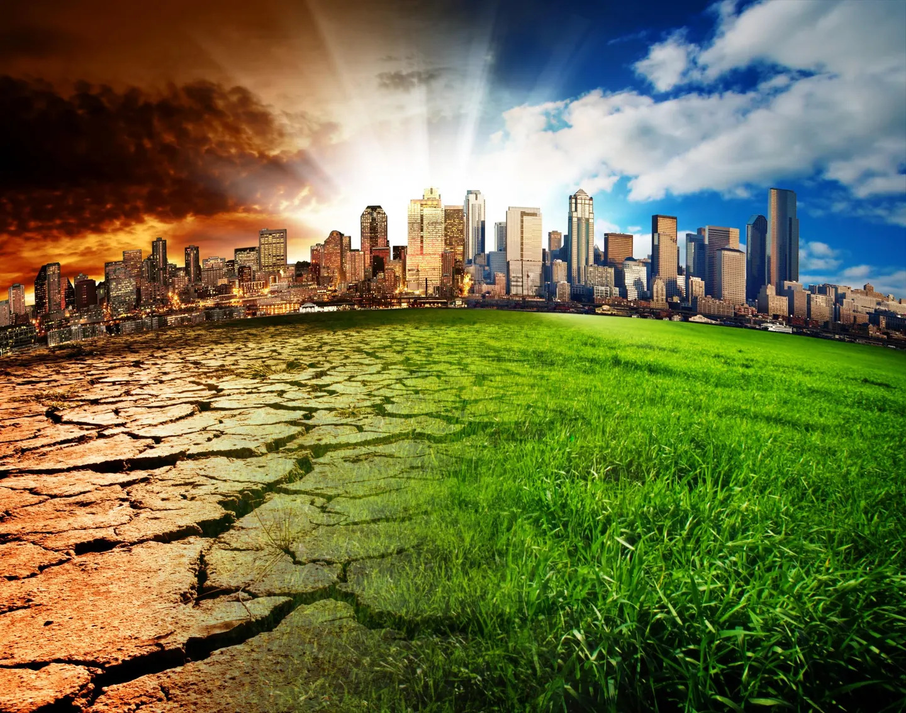

What is Climate Change?
Did you know that many studies indicate that we humans only have around 3 years left to reverse the effects of climate change? We are living in a world that is getting hotter and hotter as years go by, yet governments and people in general are slow to respond to this issue. If we do not act in time, the planet could rise to an average global temperature that will render us unable to live here, and potentially wipe out all of humanity.

According to the United Nations: "Climate change refers to long-term shifts in temperatures and weather patterns. Such shifts can be natural, due to changes in the sun's activity or large volcanic eruptions. But since the 1800s, human activities have been the main driver of climate change, primarily due to the burning of fossil fuels like coal, oil and gas." Burning fossil fuels covers the Earth and can trap the sun's heart and raises temperatures.
Carbon dioxide and mathane, the most common greenhouse gases that cause climate change, come from the use of cars to drive and coal. The destruction of trees also releases carbon dioxide. The UN also states that clearing land, agriculture, oil and gas operations are also major souces of methane emissions. These different sources are the primary reason for why climate change has increased so much with human production and evolution.